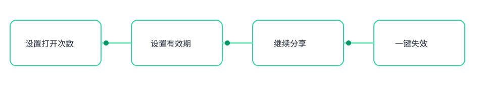

这页适合谁
如果你只是想把一组图片快速发出去，又不想在聊天里一张张传图，这页就是给你的。它不是讲复杂系统，而是讲一个很现实的问题：怎么把图片发得更省事、更清楚、也更可控。
适合普通用户
不需要复杂学习成本，先把“怎么做”跑通，比讲一堆概念更有用。
适合活动后发图
一组图一次发出去，避免朋友、客户或同事在消息记录里反复往上翻。
适合后续控制
如果你担心链接一直被转发，次数限制、有效期和失效控制就很有价值。
你真正会用到的能力
这套方式最有用的地方，不是“它能上传图片”，而是它把分享这件事拆成了几个很实在的动作：先集中、再分发、最后还能收口。
- 一组图片生成一个分享链接（最多 25 张）
- 链接可转二维码，线上线下都能发
- 可设置链接/二维码打开次数和有效期
- 发出去后可一键失效，停止继续访问
这几条就是现在真的能用的能力，也是这篇上手页最重要的事实基线。它不是协作平台，不是审批系统，但很适合“把图片发出去并保持一点控制感”。
整个流程其实很短
你可以把它理解成一个四步动作：上传一组图，得到一个统一入口，再把链接或二维码发出去，最后视情况决定要不要继续开放。


你会在页面里看到什么
如果你还没实际操作过，下面这几张图基本能把整条路径讲清楚：从进入首页，到生成结果，再到控制访问和让链接失效。
首页入口：先把需要分享的图片拖进去，别再一张张零散发图。

生成结果：同一份分享同时给你链接和二维码，线上线下都能接住。

控制设置：不是发出去就结束了，你还能决定它被看多少次、留多久。

一键失效：当这组图不该再被继续传播时，可以把入口及时关掉。
一个很实际的提醒
别把所有图都塞进同一个入口里。越清楚的一组图，越容易被点开，也越容易让对方快速看懂重点。
结论很简单
图片分享链接的价值，不在于“把图放上去”，而在于把一组图片变成一个更容易打开、也更容易收回的入口。
FAQ
当前一组分享最多 25 张图，比较适合活动回顾、作品预览、轻量资料包和日常图片分发。
因为很多场景不只在线上，比如海报、活动现场、名片或展架。二维码的价值，是让别人不用再输入长链接，扫一下就能打开。
可以。当前支持通过次数限制、有效期和一键失效来控制后续访问，这也是它和单纯“扔一个图片链接过去”最大的不同之一。